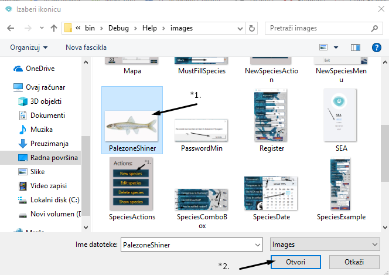
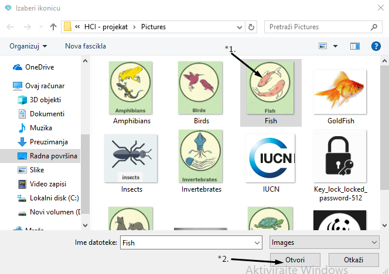

Save endangered animals je aplikacija za vođenje evidencije o geografskoj distribuciji ugroženih vrsta. Moguce je unjeti sve neophodne podatke o pojedinacnoj vrsti kao i direktna manipulacija postavljanja ikonice na odredjeni polozaj na mapi svijeta. Da bi se pristupilo aplikacije prvo je neophodno da se uloguje u korisnicki nalog nakon cega se otvara prozor aplikacije.

Application options - aplikacija SEA ima veliki izbor mogucnosti koje pruzaju manipulaciju sa vrstama.
(*1.) Sve akcije je moguce pozvati iz padajuceg menija na koji je potrebno kliknuti i izabrati zeljenu opciju.
(*2.) Sve akcije imaju svoje precice u vidu dugmeta i sve su prikazane na desnoj strani aplikacije,
ove akcije je moguce pozvati klikom na zeljenu akciju.
(*3.) Mapa svijeta na koje je moguce prevuci ikonicu zeljene vrste
(*4.) Tabelarni prikaz svih vrsta koje su registrovane u sistemu. Klikom na vrstu koju zelimo prikazuje se njena ikonica
(*5.) Prilikom selekcije vrste iz tabelarnog prikaza pokazace se ikonica te vrste. Na ovu ikonicu je moguce izvrsiti klik misa
i drzeci ikonicu prevuci na mapu svijeta i postaviti je na zeljenu poziciju.
(*6.) Kada ikonicu postavimo na zeljenu poziciju na mapi ce se prikazati umanjena verzija ikonice sa svim podacima o vrsti.
(*7.) U svakom trenutku je moguce zatraziti dodatnu pomoc ili se odlogovati iz sistema.
Species - predstavlja svaku vrstu koja se nasla na rubu istrebljenja ili je nekada bila ugrozena i sada je neophodno pratiti stanje iste. Svaka vrsta je opisana preko odredjenih polja koja daju detaljne informacije koje su neophodne da bi moglo da se prati stanje te vrste. Da bi se dodala nova vrsta potrebno je unjeti sto vise poznatih informacija radi lakse informisanosti korisnika o vrsti. Minimalan broj informacija koje je potrebno unjeti su oznaceni za oznakom ( * ), sto znaci da su te informacije neophodne prilikom unosa nove vrste.
Svaka vrsta je opisana preko:
- Name* - naziv ugrozene vrste
- Type - tipa vrste
- Mark* - jedinstvena ljudski-čitljiva oznaka
- Discovered - datum otkrivanja vrste
- Dangerous to humans - da li je opasna za ljude
- On IUCN red list? - da li se nalazi na IUCN crvenoj listi
- Lives in settled region - zivi li blizu naseljenog podrucja
- Icon - slika vrste
- Endangerment - status ugrozenosti
- Touristic status - turisticki status vrste
- Income - prihod koji donosi vrsta
- Etiquettes - etikete koje je moguce takovati svaku vrstu
- Description - detaljan opis izgleda svake vrste
New Species - da bi se dodala nova vrsta prvo je neophodno da se pozove akcija za dodavanje nove vrste.
Da bi se dodala nova vrsta potrebno je unjeti sto vise poznatih informacija radi lakse informisanosti korisnika o vrsti. Minimalan broj informacija koje je potrebno unjeti su oznaceni za oznakom ( * ), sto znaci da su te informacije neophodne prilikom unosa nove vrste. Da bi se mogla napraviti nova vrsta potrebno je unjeti naziv i oznaku vrste. Pritiskom tastera misa na oznacenu bijelu prazninu i nakon selektovanja na tastaturi je potrebno unjeti informaciju. Nije moguce ostaviti prazna polja kao ni koristiti zabranjene simbole. Pored toga oznaka vrste mora da bude jedinstvena u citavom sistemu.
Izbor tipa vrste - da bi se izabrao tip vrste neophodno je pritisnuti tasterom misa na dugme choose pri cemu ce se otvoriti novi prozor za izbor tipa.
Izbor tipa vrste :
(*1.) Lista svih tipova koji se nalaze u sistemu
(*2.) Selektovani tip koji smo izabrali. Prilikom selekcije prikazuju se osnovne informacije tipa.
(*3.) Ako u sistemu postoji veliki broj tipova, moguce je vrsiti pretragu tipa pomocu imena ili oznake.
(*4.) Nakon selektovanja tipa potrebno je kliknuti dugme choose pri cemu ce se izvrsiti izbor tipa.
(*5.) Izlaz iz prozora za izbor.
Nakon selektovanja tipa u boxu za selektovani tip ce se pojaviti oznaka izabranog tipa. Uvijek je moguce izabrati novi tip ponavljanjem akcije
Izbor datuma kada je vrsta otkrivena :
(*1.) Neophodno je kliknuti na izbor datuma nakon cega ce biti prikazan prozor sa datumima.
(*2.) Selektovanje odgovarajuce godine, mjeseca i dana pritiskom na isti.
(*3.) Nakon selektovanja datum ce se prikazati u discovered boxu.
Check box :
(*1.) Informacija da li je vrsta opasna po ljude. Ako jeste neophodno je izabrati Yes, u suprotnom No.
(*2.) Informacija da li se vrsta nalazi na IUCN crvenoj listi. Ako se nalazi neophodno je izabrati Yes, u suprotnom No.
(*3.) Informacija da li vrsta zivi u naseljenom podrucju. Ako zivi neophodno je izabrati Yes, u suprotnom No.
(*4.) Klikom na Yes/No se izabira opcija.
Ikonica vrste predstavlja sliku jedinke (*1.). Ikonicu je moguce promjeniti pritiskom na dugme Choose(*2.) pri cemu se otvara prozor za izbor nove ikonice vrste.
Neophodno je u racunaru pronaci odgovarajucu ikonicu i selektovati je (*1.) i nakon toga kliknuti otvori (*2.) prilikom cega ce da se izabere selektovana ikonica.
Status ugrozenosti je moguce izabrati klikom na combo box (*1.) prilikom cega se otvara padajuci meni sa opcijama. Status ugroženosti je jedna od slededih vrednosti: kritično ugrožena, ugrožena, ranjiva, zavisna od očuvanja staništa, blizu rizika, i najmanjeg rizika. Potrebno je izabrati odgovarajucu informaciju i kliknuti na nju prilikom cega ce biti izabrana (*2.).
Turistički status je moguce izabrati klikom na combo box (*1.) prilikom cega se otvara padajuci meni sa opcijama. Turistički status je jedna od slededih vrednosti: izolovana, delimično habituirana, habituirana. Potrebno je izabrati odgovarajucu informaciju i kliknuti na nju prilikom cega ce biti izabrana (*2.).
Income - predstavlja godisnji prihod koji se zaradi ocuvanjem vrste. Neophodno je unjeti broj prilikom cega treba paziti da je prihod prikazan u dolarima $.
Da bi se dodatno opisala svaka vrsta moze da sadrzi listu etiketa. Etikete je moguce izabrati klikom na dugme New (*1.) nakon cega se otvara prozor za izbor etiketa.
Izbor etiketa vrste :
(*1.) Lista svih etiketa koje se nalaze u sistemu
(*2.) Selektovana etiketa koju smo izabrali. Prilikom selekcije prikazuju se osnovne informacije etikete kao i prikaz njene boje.
(*3.) Ako u sistemu postoji veliki broj etiketa, moguce je vrsiti pretragu etiketa pomocu jedinstvene oznake.
(*4.) Nakon selektovanja etikete potrebno je kliknuti dugme choose pri cemu ce se izvrsiti izbor etikete.
(*5.) Izlaz iz prozora za izbor.
Nakon izbora etiketa se dodaje u listu etiketa pri cemu postaje aktivna. Etiketa se moze proglasiti neakvnom pri cemu se brise iz liste etiketa.
Description - da bi se skupio sto veci broj informacija pozeljno je da se upise i opis vrste koju unosimo u sistem (*1.).
Nakon zavrsetka unosa podataka neophodno je sacuvati vrstu pritiskom na dugme Save (*2.).
Ako zelimo da izbrisemo sve informacije iz polja dovoljno je da kliknemo na dugme Reset (*3).
Show Species - da bi se prikazala tabela svih vrsta prvo je neophodno da se pozove akcija za prikaz vrsta.
Prikaz vrsta :
(*1.) Lista svih vrsta koji se nalaze u sistemu
(*2.) Selektovana vrsta koju smo izabrali. Prilikom selekcije prikazuju se osnovne informacije vrste.
(*3.) Ako u sistemu postoji veliki broj vrsta, moguce je vrsiti pretragu vrste pomocu imena i tipa vrste.
(*4.) Mogucnost grupisanja svih vrsta na osnovu istog tipa zarad lakseg pretrazivanja.
(*5.) Nakon selektovanja vrste moguce je kliknuti dugme Change pri cemu ce se otvoriti prozor za izmjenu selektovane vrste.
(*6.) Nakon selektovanja vrste moguce je kliknuti dugme Delete pri cemu ce se selektovana vrsta izbrisati iz sistema.
(*7.) Izlaz iz prozora za prikaz vrsta.
Nakon selektovanja dugmeta Change otvara se prozor za dodavanje vrste sa popunjenim informacijama o selektovanoj vrsti. Moguce je mijenjati sve informacije o vrsti osim jedinstvene oznake vrste. Nakon izmjene informacija neophodno je izvrsiti cuvanje vrste.
Type - predstavlja klasu vrsta koje imaju neka zajednicka svojstva koja su karakteristicna samo za pripadnike tog tipa. Svaki tip je opisan preko odredjenih polja koja daju detaljne informacije o samom tipu. Da bi se dodao novi tip potrebno je unjeti sto vise poznatih informacija radi lakseg izbora tipa za svaku vrstu. Minimalan broj informacija koje je potrebno unjeti su oznaceni za oznakom ( * ), sto znaci da su te informacije neophodne prilikom unosa novog tipa.
Svaki tip je opisan preko:
- *Name - naziv tipa
- *Mark - jedinstvena ljudski-čitljiva oznaka tipa
- Description - detaljan opis karakteristika tipa
- Icon - slika tipa
New Type - da bi se dodao novi tip vrste prvo je neophodno da se pozove akcija za dodavanje novog tipa.
Da bi se dodao novi tip potrebno je unjeti sto vise poznatih informacija da bi vrsta mogla da se opise na sto bolji nacin. Minimalan broj informacija koje je potrebno unjeti su oznaceni za oznakom ( * ), sto znaci da su te informacije neophodne prilikom unosa novog tipa. Da bi se mogao napraviti novi tip potrebno je unjeti naziv i oznaku tipa. Pritiskom tastera misa na oznacenu bijelu prazninu i nakon selektovanja, na tastaturi je potrebno unjeti informaciju. Nije moguce ostaviti prazna polja kao ni koristiti zabranjene simbole. Pored toga oznaka tipa mora da bude jedinstvena u citavom sistemu.
Pozeljno je i unjeti detaljan opis tipa da bi se korisniku pruzio sto veci izvor informacija o tipu vrste. Najbolje je dati opis svih zajednickih karakteristika koje su tipicne za predstavnike tog tipa.
Ikonica tipa predstavlja sliku tipa vrste (*1.). Ikonicu je moguce promjeniti pritiskom na dugme Choose(*2.) pri cemu se otvara prozor za izbor nove ikonice tipa.
Neophodno je u racunaru pronaci odgovarajucu ikonicu i selektovati je (*1.) i nakon toga kliknuti otvori (*2.) prilikom cega ce da se izabere selektovana ikonica.
 Nakon zavrsetka unosa podataka neophodno je sacuvati tip pritiskom na dugme Save (*1.).
Ako zelimo da izadjemo iz prozora za dodavanje tipa dovoljno je da kliknemo na dugme Cancel (*2).
Show Type - da bi se prikazala tabela svih tipova prvo je neophodno da se pozove akcija za prikaz tipa.
Prikaz tipa vrste :
(*1.) Lista svih tipova vrsta koji se nalaze u sistemu
(*2.) Selektovani tip vrste koju smo izabrali. Prilikom selekcije prikazuju se osnovne informacije tipa.
(*3.) Nakon selektovanja tipa vrste moguce je kliknuti dugme Change pri cemu ce se otvoriti prozor za izmjenu selektovanog tipa vrste.
(*4.) Nakon selektovanja tipa vrste moguce je kliknuti dugme Delete pri cemu ce se selektovani tip vrsta izbrisati iz sistema.
(*5.) Izlaz iz prozora za prikaz tipa vrsta.
Nakon selektovanja dugmeta Change otvara se prozor za dodavanje tipa sa popunjenim informacijama o selektovanom tipu. Moguce je mijenjati sve informacije o tipu osim jedinstvene oznake tipa. Nakon izmjene informacija neophodno je izvrsiti cuvanje tipa.
Etiquette - predstavlja etiketu koja sluzi za detaljnije opisivanje vrste. Vrste mogu da budu tagovane sa 0 ili vise etiketa. Svaka etiketa je opisana preko odredjenih polja koja daju detaljne informacije o samoj etiketi. Da bi se dodala nova etiketa potrebno je unjeti sto vise poznatih informacija radi lakseg izbora etiketa za svaku vrstu. Minimalan broj informacija koje je potrebno unjeti su oznaceni za oznakom ( * ), sto znaci da su te informacije neophodne prilikom unosa nove etikete.
Svaka etiketa je opisan preko:
- *Mark - jedinstvena ljudski-čitljiva oznaka etikete
- Description - detaljan opis karakteristika etikete
- Color - boja etikete, pozeljno je da razlicitite vrste budu oznacene sa razlicitim bojama etiketa
Primjer etikete:
New Etiquette - da bi se dodala nova etiketa prvo je neophodno da se pozove akcija za dodavanje nove etikete.

Da bi se dodala nova etiketa potrebno je unjeti sto vise poznatih informacija da bi etiketa opisala vrstu na sto bolji nacin. Minimalan broj informacija koje je potrebno unjeti su oznaceni za oznakom ( * ), sto znaci da su te informacije neophodne prilikom unosa nove etikete. Da bi se mogla napraviti nova etiketa potrebno je unjeti oznaku etikete. Pritiskom tastera misa na oznacenu bijelu prazninu i nakon selektovanja, na tastaturi je potrebno unjeti informaciju. Nije moguce ostaviti prazna polja kao ni koristiti zabranjene simbole. Pored toga oznaka etikete mora da bude jedinstvena u citavom sistemu.
Pozeljno je i unjeti detaljan opis etikete da bi se korisniku pruzio sto veci izvor informacija o etiketi vrste. Najbolje je dati opis sposobnosti koje su tagovane sa datom etiketom.
Boja etikete (*1.) priblizava korisniku mogucnost koja je opisana u datoj etiketi. Pozeljno je da se boja bira na osnovu opisa etikete, da bi korisnika na sto bolji nacin asocirali sta je predstavljeno u datoj etiketi. Boju je moguce promjeniti pritiskom na selekciju (*2.) pri cemu se otvara padajuci meni za izbor boje.

Neophodno je pronaci odgovarajucu boju i selektovati je prilikom cega ce da se izabere selektovana boja.
Nakon zavrsetka unosa podataka neophodno je sacuvati etiketu pritiskom na dugme Save (*1.).
Ako zelimo da izadjemo iz prozora za dodavanje etikete dovoljno je da kliknemo na dugme Cancel (*2).
Show Etiquette - da bi se prikazala tabela svih etiketa prvo je neophodno da se pozove akcija za prikaz etiketa.
Prikaz etikete :
(*1.) Lista svih etiketa koje se nalaze u sistemu
(*2.) Selektovana etiketa koju smo izabrali. Prilikom selekcije prikazuju se osnovne informacije etikete.
(*3.) Ako u sistemu postoji veliki broj etiketa, moguce je vrsiti pretragu etikete pomocu oznake etikete.
(*4.) Mogucnost grupisanja svih etiketa na osnovu iste boje zarad lakseg pretrazivanja.
(*5.) Nakon selektovanja etikete moguce je kliknuti dugme Change pri cemu ce se otvoriti prozor za izmjenu selektovane etikete.
(*6.) Nakon selektovanja etikete moguce je kliknuti dugme Delete pri cemu ce se selektovana vrsta izbrisati iz sistema.
(*7.) Izlaz iz prozora za prikaz etiketa.
Nakon selektovanja dugmeta Change otvara se prozor za dodavanje etikete sa popunjenim informacijama o selektovanoj etiketi. Moguce je mijenjati sve informacije o tipu osim jedinstvene oznake etikete. Nakon izmjene informacija neophodno je izvrsiti cuvanje etikete.
Help - pomoc za upotrebu sajta. Na sajtu je prikazan sadrzaj (*1.) koji korisnik moze da klikne da bi se prebacio na odredjeni dio teksta koji trazi. Unutar sajta je prikazan tekst i fotografije sa objasnjenjem. Moguce je skrolovati stranicu. Neophodno je procitati sve informacije da bi se u potpunosti mogao koristiti sajt na pravi nacin i dobiti trazene informacije.U svakom trenutku moguce je kliknuti F1 da se pokrene help.